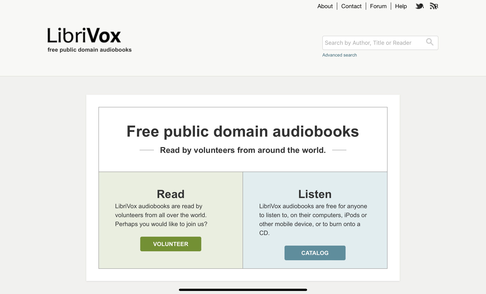

LibriVox
Provides totally free access to audiobooks that have been recorded by regular
people, not voice actors. This unique take on the audiobook approach takes a
little getting use to if you are accustomed to the polished performances of
professional voice actors. But on the flip side, it can be refreshing to hear
regular people read the way most of us do.
